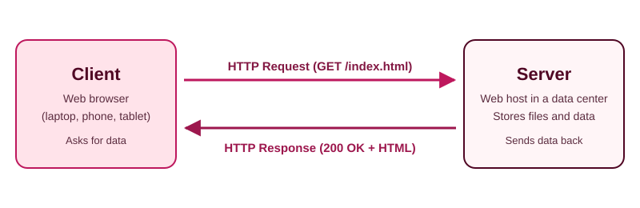
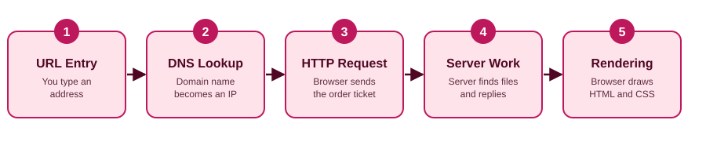

1. The client (web browser)
- Your device: laptop, phone or tablet.
- Runs apps such as Chrome, Safari or a mobile app.
- Starts the conversation by requesting data.
- Renders the code it receives into a visual website.
HTTP Explained
HTTP is the universal set of communication rules used by web browsers and servers. It dictates how messages are formatted and sent across the internet, and it powers every website visit, video stream and app data exchange.

A restaurant is an easy way to remember who does what.
| Restaurant role | Web role | What it does |
|---|---|---|
| The customer | Client / browser | Sits at the table, looks at the menu and decides what data to request. |
| The waiter | HTTP protocol / API | Carries your order ticket to the kitchen and brings the food back. |
| The kitchen | Web server | Cooks the meal, handles database queries and prepares the website assets. |

A request has up to three parts: a request line, headers and an optional body.
GET /index.html HTTP/1.1
Host: example.com
User-Agent: Mozilla/5.0
Accept: text/html
{"username": "student123"}.HTTP/1.1 200 OK
Content-Type: text/html
Content-Length: 3482
<html><body><h1>Welcome!</h1></body></html>
The Content-Type header tells the browser how to treat the bytes it just received.
| MIME type | Used for |
|---|---|
text/html | Web page structure and text markup |
text/css | Visual styling, layout, fonts and colors |
application/javascript | Interactive client-side code |
image/png, image/jpeg | Graphics and photos |
application/json | Structured data exchanged with web APIs |